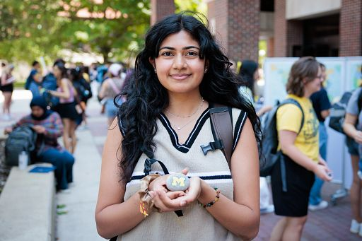
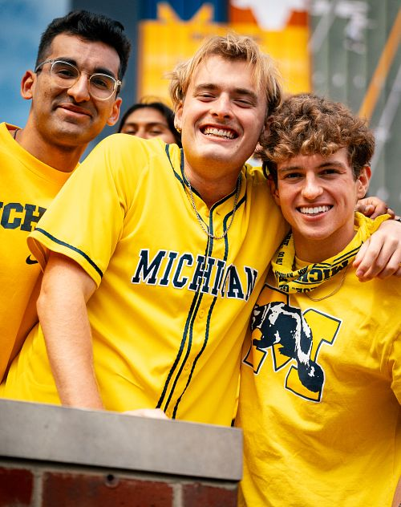

At the University of Michigan School of Information (UMSI), we are committed to supporting first genetation students' academic success by offering a wide array of resources and services. We want you to know that you are not alone. In fact almost 4,000 students are first generation! College can be a challenging experience and we are here to help you find your place in the community.
Get Involved
Participate in the many events, workshops, and programs designed specifically for first-generation students. Attend orientations, join student panels, and participate in leadership development opportunities. Check our events calendar regularly for updates.
Share Your Story
Your story is powerful and can inspire others. We encourage you to share your journey, challenges, and successes as a first-generation student. Join our sharing sessions or submit your story online. You are a valued member of our community, and your voice matters.